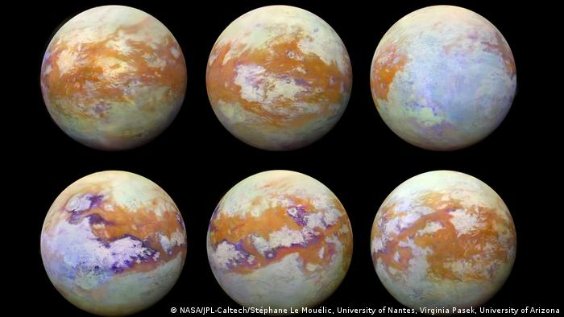

Científicos buscan explicar por qué la luna más grande de Saturno y la Tierra se parecen
Contents
Científicos buscan explicar por qué la luna más grande de Saturno y la Tierra se parecen¶
En una nueva hipótesis, unos investigadores intentan explicar por qué Titán tiene una superficie similar a la de la Tierra. A pesar de sus formaciones geológicas, los materiales del satélite son totalmente diferentes.
Un grupo de astrónomos ha planteado una nueva teoría que busca explicar por qué la luna más grande del planeta Saturno, llamada Titán, tiene una superficie visualmente similar a la de la Tierra,según el estudio que publica la revista Advancing Earth and Space Science (AGU).

Al igual que la Tierra, Titán alberga lagos, ríos, cañones, mesetas erosionadas y dunas de arena. Sin embargo, los materiales que componen estas formaciones geológicas son completamente diferentes: por sus ríos, en vez de agua, fluye metano líquido, mientras sus dunas, en lugar de arena, están compuestas por hidrocarburos blandos.
No obstante, hasta ahora nadie había podido explicar cómo es posible que las dunas de Titán, formadas por compuestos orgánicos, puedan soportar estructuras tan variadas y evitar ser convertidas en polvo fino tras la sedimentación producida por el viento de nitrógeno y el paso del metano líquido.
La hipótesis de los científicos Los investigadores llegaron a la conclusión de que en la gran luna de Saturno había al menos tres factores similares a los de la Tierra. En primer lugar, se propuso que en Titán también se producen los llamados ooides, pequeños granos sedimentarios que normalmente se hallan en aguas tropicales, que a pesar de la erosión del mar mantienen un tamaño constante.
En segundo lugar, los científicos estimaron que los vientos eran más comunes alrededor del ecuador de Titán, lo que permitió el desarrollo de las dunas. En otros lugares de la superficie lunar, los vientos podrían haber provocado la formación de granos más gruesos o de roca sedimentaria más sólida.
“Nuestra hipótesis es que la sinterización -que consiste en que los granos se fusionen en una sola pieza- podría contrarrestar la abrasión cuando los vientos transportan los granos”, explicó el director de la investigación, Mathieu Lapôtre, de la Universidad de Stanford.
Un ciclo estacional similar a la Tierra¶
Titán, además de la Tierra, es conocido como el único cuerpo celeste con un ciclo de transporte líquido estacional, por lo que los expertos sugieren que el metano líquido también contribuye a la erosión y la formación de sedimentos.
“Estamos demostrando que en Titán -al igual que en la Tierra y lo que ocurría en Marte- hay un ciclo sedimentario activo que puede explicar la distribución latitudinal de los paisajes a través de la abrasión episódica y la sinterización impulsada por las estaciones de Titán”, agregó Lapôtre.
“Es bastante fascinante pensar en cómo existe este mundo alternativo tan lejano, donde las cosas son tan diferentes y a la vez tan similares”, concluyó.